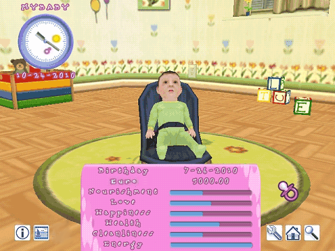

12 |
Game status |
 |
|
In the top left of your screen are details about your baby and information about your current game.

Baby's Name: Your baby's given name.
Information Menu
Birthday The date your baby was born!
The amount of money you have
Is your baby hungry? This bar shows you the appetite of your baby. When the bar is low it is time to feed your baby!
If this bar is not full, it means that your baby needs your love. Give your baby more attention and affection to increase this level. Your baby responds to cuddling and caressing and it makes them feel loved. It is very important for this bar to remain full at all times.
Does your baby play enough? Do you also play with your baby? This level shows how happy your baby is. To keep your baby happy make sure they have toys to play with and make sure they laugh! Press the A Button on your baby to tickle them and they will laugh!
This value is very important. If the health value is low, your baby will get sick and the Nanny will have to call the Doctor.
During the day and night your baby will get dirty and will need to be changed or bathed. If this value is low it is time to either change your baby's nappy or give them a bath!
Throughout the day, your baby will tire out from the activities such as playing, learning to crawl, holding its balance, walking, etc. By lulling your baby to sleep, for a nap during the day or to bed for the night, your baby will regain their energy. |
 |
 |
 |